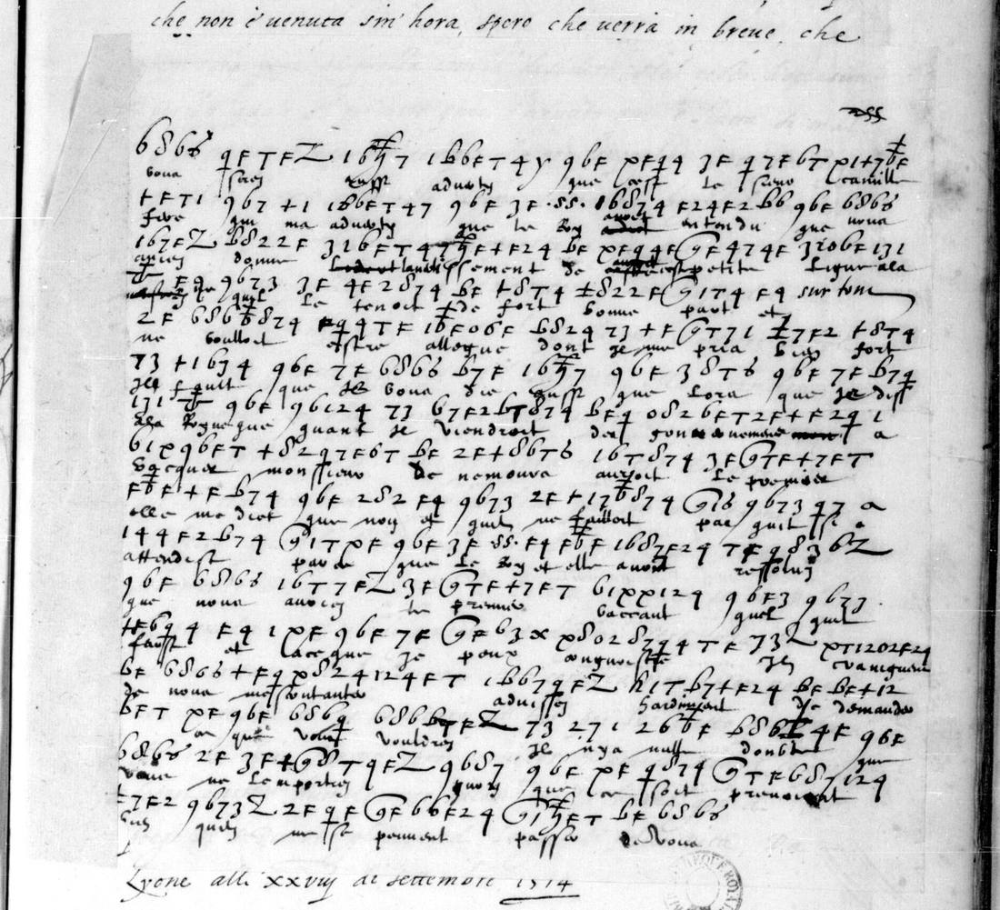
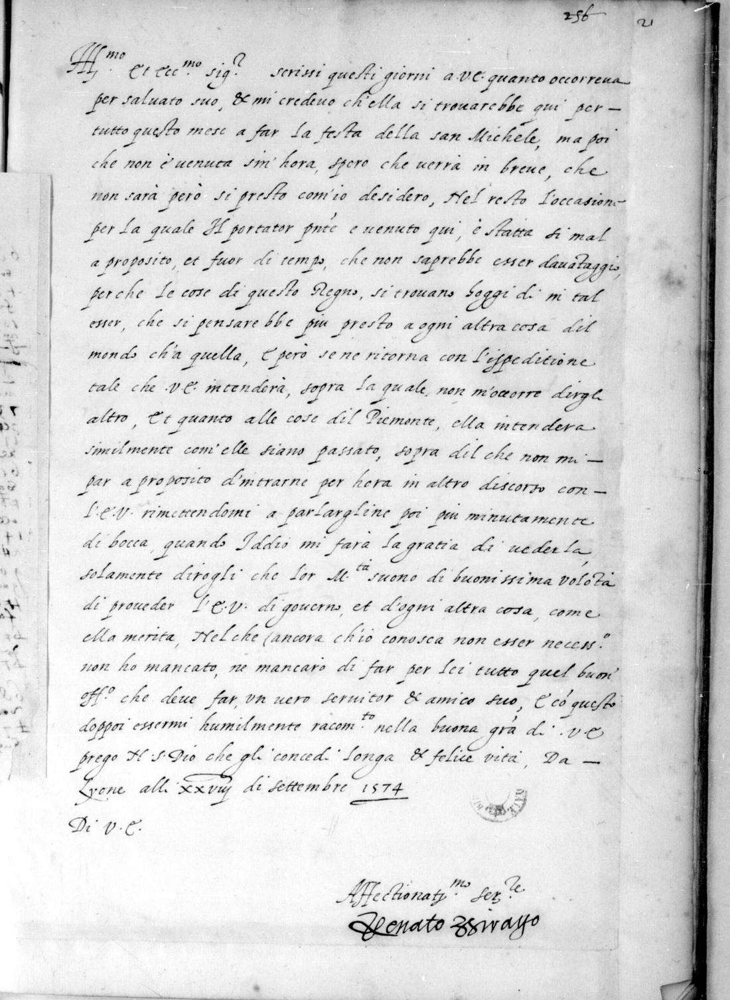
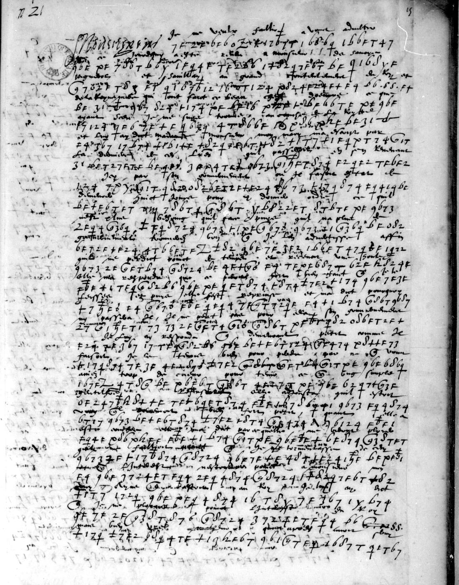
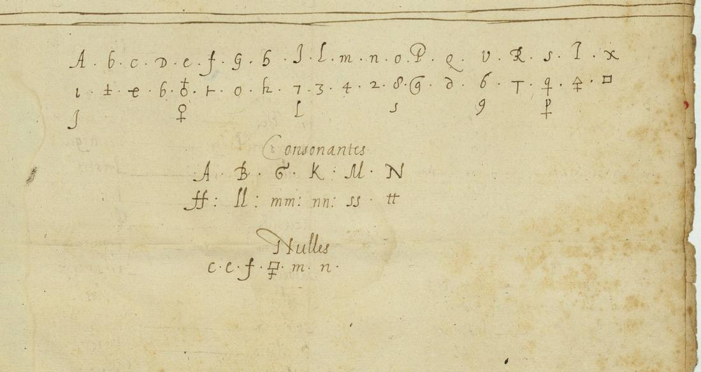

At a glanceExisting decipherment · partial (94% of the cipher)
- The letter
- Renato Birago to the Duke of Nevers, Lyon, 28 September 1574 (f. 21), and a letter of Henriette de Clèves, Lyon, 16 September [1574] (f. 15; the year is inferred from the archival setting).
- Where
- BnF français 3315, ff. 15 and 21 (Gallica btv1b90600800), with a clear ending on f. 16r.
- The cipher
- An alphabet of graphic signs with special signs for doubled consonants and nulls. It does not use the Nevers key at ff. 12–13; it resembles Nevers no. 2 (1584, BnF fr. 3995 f. 16) but differs in decisive assignments.
- How it was read
- Both leaves carry their own decipherment. On f. 21 a folded cipher sheet covers a clean, signed Italian copy of Birago’s whole letter; on f. 15 an early hand wrote French plaintext between the cipher lines. No key was rebuilt and no solver was run.
- What it says
- Birago says Nevers’s visit is late, Piedmont is better discussed orally, and Their Majesties wish to provide Nevers with a government. Henriette writes at midnight, her eyes hurt from weeping.
- Still open
- On f. 15 the interlinear decipherment is transcribed only in part and the ciphered middle lacks a reliable line-by-line transcription. One phrase on f. 21 is uncertain, and the exact 1574 alphabet is not rebuilt.
- Credit
- Satoshi Tomokiyo observed that the leaves do not use the key at ff. 12–13 and are close to Nevers no. 2.
01 What was found on the openings
The Gallica viewer’s sequence obscures the physical arrangement. Image f17 shows manuscript f. 15r, and f18 shows its verso next to a clear ending on f. 16r. Image f23 shows f. 21r with Birago’s pale cipher flap covering much of the Italian fair copy. In image f24 the flap is folded away, revealing the whole clear text on the same recto. The next image is the verso and bleed-through, not another ciphertext.


02 Birago’s letter, 28 September
Birago had expected Nevers at Lyon throughout the month for the feast of St Michael. Since he has not come, Birago hopes to see him shortly, though not as soon as he would like. The bearer’s purpose has come at a bad time: affairs of the kingdom are such that virtually anything else would be considered before it. He therefore returns with the dispatch that will make the answer clear.
Et quanto alle cose dil Piemonte, ella intenderà similmente com’elle siano passate … rimettendomi a parlargliene poi più minutamente di bocca, quando Iddio mi farà la gratia di vederla.
Birago will not commit the Piedmont business to a fuller written discussion. He adds that Their Majesties are very willing to provide Nevers with a governorship and every other thing he deserves, and that he has done and will continue to do every good office of a true servant and friend. A semi-diplomatic transcription of the whole leaf is in targets/nevers1574/f21_transcription.md; only one short expression in the first sentence remains uncertain.
03 Henriette de Clèves, 16 September [1574]
The cipher fills two dense pages and the first 19 lines of f. 16r. Above almost every run a smaller contemporary hand has supplied its plaintext. The letter opens:
Monseigneur, je ne veulx faillir a vous advertir que ce jourd’huy a esté rendu a monsieur de Savoye Pignerol et Savillan, au grant contentement du Roy et de la Royne mere, qui ont faict ce beau chef d’euvre.
The duchess then went to the Queen Mother’s council. Catherine asked why Nevers should not pass through, since he did not lose his government for that; the duchess answered that, cut down as it was, she held it for lost. At court it had been told to the King that Nevers had written of “une ligue aupres du Roy de quatre ou cinq”. Two governments “qui ne pouvoient faillir, comme Picardie et Languedoc” are in prospect, and his friends say that if he keeps his government as it now stands “vous vous feriez beaucoup de tort”. The reading (f15_reading.md, English f15_en.md) has 4 holes in 402 tokens on f. 15r and f. 16r; on f. 15v lines 2–5 are overwritten and their gloss is faded. Over the whole letter the reading builds coherent sentences but reads at 94.1% of its words (measured 24 October 2026), under the 95% a complete reading needs.
The outer address is clear: A Monsieur, Monsieur le duc de Nevers, pair de France. The cipher runs on from the foot of f. 15v into the first 19 lines of f. 16r (“Je luy ay” continues there), and then gives way to a clear ending in the duchess’s hand. The writer says it is midnight, her eyes hurt from weeping, she wishes herself in paradise rather than suffer the way they are being made to suffer, and asks God to grant her “bon frère” patience. The closing reads “De Lyon ce 16 de septembre”; the year 1574 is inferred from the archival setting. A superficially similar appeal of Henri III to the duchess printed by Lavisse belongs to an earlier occasion, before his departure for Poland, and cannot serve as a crib for this letter.

04 A related key of 1584
Tomokiyo observed that ff. 15 and 21 do not use the Nevers key copied at ff. 12–13. They closely resemble Nevers collection no. 2, issued a decade later in 1584 and preserved in BnF fr. 3995 f. 16, but differ in decisive assignments: on the 1574 leaves F is e, 9 is q, and x, y and z are left in clear. The 1584 table therefore shows the design of the system (an alphabet of graphic signs, special signs for doubled consonants, and nulls), but it cannot be applied to this text as it stands.

The 1574 alphabet was rebuilt on 22 October 2026 by aligning the f. 15 signs with the French gloss above them (f15_key.md): a=1, c=C, d=a b-shape, e=F or E, g=0, i/j=7, l=3, m=+, n=2, o=8, q and s=9, r=T, t=4, u/v=6, with a doubling sign, name signs for the King, the Queen Mother and the Queen, and XX with digits for a number. Every value is attested in several words. It is close to the 1584 no. 2 alphabet but not the same.
05 What remains
- F. 15v ll. 2–5 and the gloss-only line at its head (about 70 words). The decipherer wrote over the cipher signs and the gloss above is faded or struck; the original or a multispectral image might recover them.
- About a dozen single groups on f. 15v (ll. 7, 10, 12–16, 20–23) and f. 16r (ll. 1, 14), which neither the signs nor the faded gloss settle; the group XX before “une ligue” is not spelled.
- One phrase on f. 21 (grade I). The fair copy appears to write per saluato suo; it may contain a personal name or abbreviation. The rest of the clear copy is transcribed at grade H.
Full texts
The transcription and the decryption of every document on this page, so that the reading can be used and checked. Short files are shown here; all are in the repository.
Henriette de Clèves to the duke of Nevers, Lyon, 16 Sept [1574], ff. 15-16 read in part
The duchess tells her husband that Pignerol and Savillan have been handed to the Duke of Savoy, to the contentment of the King and the Queen Mother, so that Nevers is left without his government; her exchange with the Queen Mother (who first approves warning him, then says he does not lose his government) and her tears; a report to the King that Nevers had written of a league of four or five near the King; promises of the next vacant government (Picardy, Languedoc); his friends say he would harm himself by keeping the reduced government. Cipher continues on f. 16r (19 lines), then a clear closing: it is midnight, she would rather be in paradise.
Builds coherent sentences, but under the read bar of 95% of words read as sense (94% here); the holes are marked in the reading.
Transcription
# BnF fr. 3315, duchess of Nevers to the duke, Lyon 16 Sept [1574]: cipher signs, word by word, as read from the # Gallica full-resolution images (openapi.bnf.fr IIIF, f17 right half = f.15r, f18 left = f.15v, f18 right = f.16r). # 22 Oct 2026, Claude Opus 5.5. Approximate in places: signs overwritten by the decipherer or crossed by the gloss. # Notation: 1=a ±=b C=c b=d F/E=e +=f or m (crossed long f / plain m, not kept apart) q̶=f (f.16r) 0=g h=h # 7=i/j 3=l 2=n 8=o G or (9 = p (looped) 9=q or s T=r 4=t 6=u/v Z=x/z y=y ʒ=doubling sign (ss/ll) # b̶=ll SS=Roy [RM]=Royne mere [-d-]=Royne XX=number marker ? = unread sign .. = several unread signs # words separated by spaces as in the manuscript; | = gap in my transcription # page line signs 15r 1 7F 27F 6F6oZ +1773TT 1 6869 1b6FT47 15r 2 9bE CF 786Tb6y 1 F94F TF2b6 1 +8297F6T bF 9168yF 15r 3 G97802FT83 FT 916761 2 16 0T124 C824F24F+F24 b6 [Roy?] F4 15r 4 bF 31 [RM] 967 824 +174 CF ±F16 ChF+ bF66TF CF 96F 15r 5 17124 9F6 7F +F 9679 4T866F 16 C829F73 bF 31 [-d-] 15r 6 F4 367 17 b74 +1b1+F +8297F6T +82 +1T7 +1 F9CT74 G1T 15r 7 31 bFT27FTF bF 9F9 3F44TF9 9673 G199FT874 F2 9F2 TF6F2 15r 8 124 7Cy G1T 982 082bFT2F+F24 82 9F +179874 F9419 bF 15r 9 bF+F6TFT h67C4 786T9 G86T y b822FT 8TbTF CF 9673 15r 10 2F94 G369 ±F98724 9673 +1CF G679 9673 21 G369 bF 082 15r 11 6FT2F+F24 4T66FTFZ ±82 96F 7F 3F2 1b6FT4799F 1++72 15r 12 9673 2F GFTb74 G8724 bF 4F+G9 F4 TFCF687T 62F C824F.. 15r 13 F3F +1 TF9G82b6 96F CF 9FT874 +8T4 ±7F2 +174 96F 7F 3F 15r 14 +7ʒFb F4 (9679 F3F 9F94 TFGT729F F4 +1b74 G86T9687 15r 15 27 (91ʒFT1 73 73 2F (9FT4 (91b (986T CF.. 982 0826FT2F+F24 15r 16 F24 7F 367 17 TF9(982b6 96F bF+F6T124 (9F474 C8++F73 15r 17 +17984 7F 3F 4..9 ±7F2 (9.. (9FTb6 (91T CF 96F 6869 15r 18 167FZ 4T8(9 bF C6F6T (9886T 4F27T CF 96F 62 97+(93F 15r 19 0F247ʒh8++F TF+69FT874 FʒF .. 1b786ʒ1 9673 F94874 15r 20 6T17 9673 bF+F6T874 ±7F2 +8T4 (9F474 ∧ 96124 FʒF 1 15r 21 F94F C86ChFF FʒF +1b74 (91T CF 96F ʒF +F 6Fb74 (938TFT 15r 22 9673Z̶F +17ʒ824 (98724 96F 7F +F 48T+FZ41ʒF bF CF31 15r 23 F4 96F 3724FTF94 2F94 4874 (98724 1 +8297F6T +82 15r 24 +1T7 1229 96F CF94 4874 16 SS 7F 367 17 b74 15r 25 96F 7F 2F (938T879 (98724 3724FTF94 b6 SS 15r 26 +179 ±7F2 6894TF +13hF6T 9b1(9TF9 1687T 9FT67 15v 0 (gloss line with no cipher under it) 15v 1 XX15.. CF94F C8T8ZZ2F 97 +7bFb̶F+F24 F4 15v 2 ..4124 b..FC4782? .. 686? 167FZ (9..FT b6 3Fb.. 15v 3 ..9F2b .. 31 +8.7.4.7.F .. 6 7.. 4 (9..T TFC8+(9F29F 15v 4 .. CF b.F b8..(9F 8 6 9 686 .7 T F.4.T (9...FZ 16 +F9 15v 5 F9 414 9 6F ..6 8 b9 F9 4 7.. 8.. 9 6F 6724F6 FZ 15v 6 +T12CF 16 TF94F 7F 367 686+b.. 7F2 b7TF 6.. 15v 7 Ch89 96F T1b879 4F6 bF(9679 XXm hF6TF9 967 15v 8 F94874 96F 382 316874 b74 16 SS 96F CF94874 686. 15v 9 967 367 167FZ F9CT774 9673 CF94874 +17C4 15v 10 XX 62F 3706 1 6(9TF9 b6 SS bF 9614TF 86 C729 15v 11 F4 96Fb̶F +FT874 ±7F2 b7 b822FT 8TbTF 15v 12 CF 96F 7F (9F29.87.. ..b. F2 (91T47F 9673 +F69 4 6F.. 15v 13 +1±3F (91T3.CF 96F bF(967b 9673 F94 TF6F26 73 15v 14 ..6 8 24 .. 176 (91 1T3.. bF 6.86. C8++F 73 16874 15v 15 ..C C b..Ch4 6+.. F..9 6 .. CF94874 Ch89F bF9687 15v 16 +F9+F (9886..74 4F9 9F87202FT 38T9 FʒF +1 b74 15v 17 96Fb̶F (9F29874 ±7F2 .. 96F 282 C1T 3F SS 2F 367 F2 15v 18 26824 (91T3F 16C62F+F24 +178 bF+172 96Fb̶F 367 15v 19 F2 (91T3FT874 F4 F2 91bT874 ±7F2 31 6FT74F F4 15v 20 863 4TF 96F CFʒ19F ..FT874 ±7F2 F94T120F bFCT8.. 15v 21 4Fb̶F9 0F2b C824TF F CFb6y 9673 16874 4124 +17C4 15v 22 bF 9FT67CF9 96F 1.. 16 bF+F6T124 96F 7F (9TF+7FT 15v 23 082 6FT2F+F24 967 .. 67F2bT874 1 61C96FT 6869 ..816.. 15v 24 F2F4 9673 y F2 1687T4 bF6Z 967 2F (98668724 15v 25 +17ʒ7T C8++F (97C1Tb7F F4 3120bFbC 7F 367 17 16r 1 TF9(982b6 96F CF94874 Ch89F 96F 6869 21 CF(99F 16r 2 T7F2 71+179 96F 3F9 F94147Z bF CF63Z 967 16r 3 9824 F2C8TF9 676129 96F 362 6869 F94874 16r 4 4T8(9 (9T8ZhF F4 96F 3164TF 16874 4T8(9 16r 5 +87F6 (986T +17TF 982 1(9(98724F+F24 68731 16r 6 C8++F 4864 9F94 (91ʒF CF 96F | (then in clear) je vous ay bien voulu 16r 7 +17TF F24F2bTF bF +84 1 +84 1q̶q̶72 96F 6869 (9TF 16r 8 2FZ TF9831647 82 bF CF 96F 6869 16FZ 1q̶q̶17TF 16r 9 31 bFʒ69 +179 7F 2F +F (9679 01TbFT bF 16r 10 686b b7TF 96F 4864 689 1+79 F4 9FT674F6T9 16r 11 b7F24 96F 97 6869 4F2FZ 6894TF b7C4 16r 12 0826FT2F+F24 17297 9673 TF94F 16786T b6y 16r 13 6869 6866 +FT7FZ ±F16C86(9 bF 48T4 16r 14 +864F9+879 7F 2F 6866 (9679 C824F2bTF 96T 16r 15 CF9 1q̶17TF9 31 (91T CF 9673Z 2F 9824 (919 16r 16 bF +1 (98T4FF 7F 2F 6866 916T874 FZ(9T7+FT 3F.. 16r 17 F4 3F C824124F+F24 9673Z 824 bF 31 b7C4F TFb747 82 16r 18 F4 6866 C8297ʒF bF 2F 3F6T F2 +12bFT 16C62F Ch89F 16r 19 bF (9F6T bF (9F6T 9673Z 2F 3F (9TF22F2 bF +16617 9F (91T4
Transcription
# The interlinear gloss of fr. 3315 ff. 15r-16r, as transcribed The contemporary decipherer wrote a French word-by-word reading in small cursive above each cipher line (on f. 15v he also wrote single letters on top of many signs). Transcribed 22 Oct 2026 by Claude Opus 5.5 from the Gallica native scans, line by line; `[?]` = a word not legible in the gloss, `[?word]` = doubtful. Where the gloss is lost, the reading in `f15_reading.md` rests on the cipher signs (see `f15_signs.tsv`); the gloss column here records only what was seen in the gloss itself. ## f. 15r (26 cipher lines; "Monseigneur" in clear at the head) 1. Je ne veulx faillir a vous advertir 2. que ce jourd'huy a esté rendu a monsieur [?] de Savoye 3. Pignerol et Savillan au grand contentement du Roy et 4. de la Royne mere qui ont faict ce beau chef d'oeuvre [?] que 5. ayant sceu je me suis trouvée au conseil de la Royne 6. et luy ay dict Madame monsieur mon mary m'a escript par 7. la derniere de ses lettres qu'il passeroit en s'en reve- 8. -nant icy par son gouvernement on se faisoit estat de 9. demeurer huict jours pour y donner ordre ce qu'il 10. n'est plus besoing qu'il face puis qu'il n'a plus de gou- 11. -vernement trouverez bon que je l'en advertisse affin 12. qu'il ne perde point [?] temps et recevoir une [?] 13. elle m'a respondu que ce seroit fort bien faict que je le 14. [?] et puis elle s'est reprinse et m'a dict pourquoy 15. n'y passera il il ne perd pas pour cela son gouvernement 16. je luy ay respondu que demeurant petit comme il 17. faisoit je le [?tiens] bien pour perdu par ce que vous 18. aviez trop de cueur pour tenir ce qu'un simple 19. gentilhomme refuseroit elle [?] adjousta qu'il estoit 20. vray qu'il demeuroit bien fort petit quant elle a 21. esté couchée elle m'a dict par ce qu'elle me [?veit] plorer 22. qu'il ne falloit point que je me tourmentasse de cela 23. et que l'interest n'est point a monsieur mon 24. mary [?] c'est tout au Roy je luy ay dict 25. que je ne plorois point l'interest du Roy 26. mais bien vostre malheur qu'apres avoir servi ## f. 15v (25 cipher lines; the gloss here is fainter and partly struck through) 0. (a gloss line at the head with no cipher beneath it) [?] [?] a [?villar...] [?] [?] 1. 25 ans ceste couronne si fidellement e[t] 2. ayant tant d'[?affection] [?] [?] [?] [?publicq] [?] 3. [?bonne] e[t] la [?moitié] elle a [?] [?] e[t] pour [?recompense] 4. [?] [?estat] e[t] [?bonne] [?] [?] [?] [?Lire] [?] [?que] [?viendrez] [?] 5. [?] [?] [?] [?] [?] [?] 6. France au reste je luy [?ay] voullu [?] dire [?] 7. [?] que [?Jamais] [?] depuis 24 heures qui 8. estoit [?] [?] dit [?] Roy [?] [?] vous 9. qui luy aviez escript qu'il [?] faict 10. [?] [?] ligue aupres du Roy de quatre ou cinq 11. et qu'elle feroit bien d'y donner ordre 12. ce que je [?pensoys] [?] en [?partie] qu'il [?] [?] 13. [?] par ce [?] depuis qu'il est revenu de [?] 14. [?] [?accoustumé] [?] [?] comme il avoit 15. mesme [?] [?pouvoit] [?] c'estoit chose desquoy 16. [?] tesmoign[er] [?] lors elle m'a dict 17. qu'elle pensoit bien [?moy] que non car le Roy ne luy en 18. [?] point parlé aucunement mais demain qu'elle luy 19. en parleroit [?] [?] la verité [?] et 20. ou l'autre que [?] [?] seroit bien estrange de [?decevoir] 21. telles gens [?] [?] qu'il avoit tant faict 22. de services [?] au demeurant [?] je premier 23. [?] [?] qui viendroit a vaquer vous [?] 24. [?] qu'il y en [?auroit] [?] qui [?] [?] 25. faillir comme Picardie e[t] Languedoc je luy ay ## f. 16r (19 cipher lines, then the clear ending) 1. respondu que c'estoit chose que [?vous n'av...] [?] 2. rien jamais que les estatz de ceulx qui 3. sont encores vivans que l'un vous estoit 4. trop proche et que l'autre avoit trop 5. moien pour faire son appoinctement voila 6. comme tout s'est passé ce [?] (rest of the line in clear: je vous ay bien voulu) 7. faire entendre de mot a mot affin que vous pr- 8. -eniez resolution de ce que vous avez affaire 9. la dessus mais je ne me puis garder de 10. vous dire que tous vos amys et serviteurs 11. dient que si vous tenez vostre dict 12. gouvernement ainsi qu'il reste aujourd'huy 13. vous vous feriez beaucoup de tort 14. toutesfois je ne vous puis [?] sur 15. ces affaires la par ce qu'ilz ne sont pas 16. de ma portée je ne vous sauroit exprimer le [?] 17. et le contantement qu'ilz ont de la dicte reddition 18. et vous conseille de ne leur en mander aucune chose 19. de peur [de peur] qu'ilz ne le prennent de mauvaise part
Decryption
<!--
Henriette de Clèves, duchess of Nevers, to her husband Louis de Gonzague, duke of Nevers. Lyon, 16 September [1574].
BnF français 3315, f. 15r-v and f. 16r (Gallica btv1b90600800, images f17 right half, f18 left and right halves).
Rests on: (1) the contemporary interlinear French gloss written above each cipher line, transcribed in f15_gloss.md;
(2) a mechanical decode of the large cipher signs (f15_signs.tsv) with the alphabet recovered from gloss-sign
alignment (f15_key.md). Each word is carried by the gloss, by the signs, or by both; [?word] = partly carried,
[…] = unread. Spelling as written (u/v, i/j as in the gloss), modern punctuation added, abbreviations expanded.
f. 16r is not only a clear closing: its first 19 lines continue the cipher (with gloss), then the clear ending follows.
Read from the Gallica native-resolution images, 22 Oct 2026, by Claude Opus 5.5.
-->
# Henriette de Clèves to the duke of Nevers, Lyon, 16 September [1574]
## f. 15r
Monseigneur, je ne veulx faillir a vous advertir que ce jourd'huy a esté rendu a monsieur de Savoye Pignerol et Savillan, au grant contentement du Roy et de la Royne mere, qui ont faict ce beau chef d'euvre. Ce que ayant sceu, je me suis trouvée au conseil de la Royne et luy ay dict : « Madame, monsieur mon mary m'a escript par la derniere de ses lettres qu'il passeroit en s'en revenant icy par son gouvernement ; on se faisoit estat de demeurer huict jours pour y donner ordre, ce qu'il n'est plus besoing qu'il face, puis qu'il n'a plus de gouvernement. Trouverez bon que je l'en advertisse, affin qu'il ne perdit point de temps [?et recevoir] une [?conte…]. »
Elle m'a respondu que ce seroit fort bien faict que je le fisse ; et puis elle s'est reprinse et m'a dict : « Pourquoy n'y passera il ? Il ne pert pas pour cela son gouvernement. » Je luy ay respondu que, demeurant petit comme il faisoit, je le [?tiens] bien pour perdu, par ce que vous aviez trop de cueur pour tenir ce qu'un simple gentilhomme refuseroit. Elle adjousta qu'il estoit vray qu'il demeuroit bien fort petit.
Quant elle a esté couchée, elle m'a dict, par ce qu'elle me [?veid] plorer, qu'il ne falloit point que je me tourmentasse de cela, et que l'interest n'est point a monsieur mon mary, ains que c'est tout au Roy. Je luy ay dict que je ne plorois point l'interest du Roy, mais bien vostre malheur, qu'apres avoir servi
## f. 15v
25 ans ceste couronne si fidellement et ayant tant d'[?affection] […] aviez […] […] […]. […] et la [?moitié] […] elle a […] […] et pour recompense […]. […] […] […] […] […] […] […] […] […] […] […] […] […] […] […] […] […] […] […] […] […] France.
Au reste, je luy [?ay] voulu […] dire […] chose que […] depuis 24 heures, qui estoit que l'on l'avoit dict au Roy que c'estoit vous qui luy aviez escript qu'il c'estoit faict […] une ligue aupres du Roy de quatre ou cinq, et qu'elle feroit bien d'y donner ordre.
Ce que je [?pensois] […] en [?partie] qu'il […] […]. […] par ce que depuis qu'il est revenu il […] […] a parler de vous comme il avoit […]. […] […] c'estoit chose desquoy mesme [?pouvoit] tesmoigner ; lors elle m'a dict qu'elle pensoit bien que non, car le Roy ne luy en [?a] point parlé aucunement, mais demain qu'elle luy en parleroit et en sauroit bien la verité ; et […] ou l'autre que […] seroit bien estrange de […] telles gens contre celuy qu'il avoit tant faict de services.
Au demeurant, […] que je premier […] gouvernement qui viendroit a vacquer, vous […] ; en [?effect] qu'il y en auroit deux qui ne pouvoient faillir, comme Picardie et Languedoc. Je luy ay
## f. 16r (cipher, lines 1-19)
respondu que c'estoit chose que vous n'a[…] rien jamais que les estatz de ceulx qui sont encores vivans, que l'un vous estoit trop proche et que l'autre avoit trop moien pour faire son appoinctement. Voila comme tout s'est passé, ce que je vous ay bien voulu faire entendre de mot a mot, affin que vous preniez resolution de ce que vous avez affaire la dessus.
Mais je ne me puis garder de vous dire que tous vos amys et serviteurs dient que si vous tenez vostre dict gouvernement ainsi qu'il reste aujourd'huy, vous vous feriez beaucoup de tort ; toutesfois je ne vous puis […] sur ces affaires la, par ce qu'ilz ne sont pas de ma portée. Je ne vous sauroit exprimer le […] et le contantement qu'ilz ont de la dicte reddition, et vous conseille de ne leur en mander aucune chose, de peur qu'ilz ne le prennent de mauvaise part.
## f. 16r (clear, in the duchess's hand)
Je vous supplie m'excuser si je ne vous escris davantage, car il est minuit et les yeulx me font si grand mal de pleurer que je ne vous [?…] ansi ; que je n'ay aultre chose a vous dire pour ceste heure, sinon que, voyant de la fasson que l'on nous [?mene], je vouldrois estre au paradis. Je supplie Dieu, mon bon frere, qu'il vous donne patience. De Lion, ce 16 septembre.
Address (outer leaf): A Monsieur, Monsieur le duc de Nevers, pair de France.
## Notes
* Context. Henri III, back from Poland, met Emmanuel-Philibert of Savoy at Turin in August-September 1574 and
agreed to return Pignerol and Savigliano; the duke of Nevers was governor of the French places in Piedmont, so
the cession left him "plus de gouvernement". The letter reports the news, the duchess's audience with Catherine
de Médicis (la Royne mere / la Royne), a rumour at court that Nevers had written to the King about a "ligue" of
four or five, and his friends' advice about the remaining governorship. The two governorships "qui ne pouvoient
faillir" are Picardie and Languedoc. Birago's letter of 28 Sept (f. 21) speaks of the same "governo".
* 15r l.3: the group after "du" is not spelled out; it is glossed "Roy" (same sense as `SS` elsewhere).
* 15r l.12: "et recevoir une conte…": signs `F4 TFCF687T 62F C824F..`; the end of the line is crossed by the gloss.
* 15r l.17: "tiens": the sign group is partly struck; the gloss is "t[?]".
* 15r l.21: "veid": signs `6Fb74`; the gloss reads "veit/veid".
* 15v ll.1-5 (after "25 ans ceste couronne si fidellement"): the cipher is overwritten letter by letter by the
decipherer and the gloss above is faded; only "ayant tant", "aviez", "la moitié", "elle a", "recompense" and
"France" are carried. This is the main hole of the letter (about 70 words).
* 15v l.7: `T1b879` after "chose que" does not resolve ("racontoit"?); `XXm` is glossed "24".
* 15v l.9: "qu'il c'estoit faict" as written (`CF94874`), i.e. s'estoit.
* 15v l.10: the group `XX` before "une ligue" is not spelled; left unread.
* 16r l.1: `21 CF(99F` after "vous n'a…" does not resolve.
* 16r l.14: `C824F2bTF` (glossed illegibly) left unread.
* The f. 16r clear ending was re-read on the native image: "de Lion ce 16 [one word struck] septembre". The word
after "je ne vous" (underlined with a flourish) is not read.
* Ernest Lavisse, *Histoire de France* VI.1, prints an emotional appeal of Henri III to the duchess written before
his departure for Poland. It is not this letter and was not used as a crib.Reading
<!--
Henriette de Clèves, duchess of Nevers, to her husband Louis de Gonzague, duke of Nevers. Lyon, 16 September [1574].
BnF français 3315, f. 15r-v and f. 16r (Gallica btv1b90600800, images f17 right half, f18 left and right halves).
Rests on: (1) the contemporary interlinear French gloss written above each cipher line, transcribed in f15_gloss.md;
(2) a mechanical decode of the large cipher signs (f15_signs.tsv) with the alphabet recovered from gloss-sign
alignment (f15_key.md). Each word is carried by the gloss, by the signs, or by both; [?word] = partly carried,
[…] = unread. Spelling as written (u/v, i/j as in the gloss), modern punctuation added, abbreviations expanded.
f. 16r is not only a clear closing: its first 19 lines continue the cipher (with gloss), then the clear ending follows.
Read from the Gallica native-resolution images, 22 Oct 2026, by Claude Opus 5.5.
-->
# Henriette de Clèves to the duke of Nevers, Lyon, 16 September [1574]
## f. 15r
Monseigneur, je ne veulx faillir a vous advertir que ce jourd'huy a esté rendu a monsieur de Savoye Pignerol et Savillan, au grant contentement du Roy et de la Royne mere, qui ont faict ce beau chef d'euvre. Ce que ayant sceu, je me suis trouvée au conseil de la Royne et luy ay dict : « Madame, monsieur mon mary m'a escript par la derniere de ses lettres qu'il passeroit en s'en revenant icy par son gouvernement ; on se faisoit estat de demeurer huict jours pour y donner ordre, ce qu'il n'est plus besoing qu'il face, puis qu'il n'a plus de gouvernement. Trouverez bon que je l'en advertisse, affin qu'il ne perdit point de temps [?et recevoir] une [?conte…]. »
Elle m'a respondu que ce seroit fort bien faict que je le fisse ; et puis elle s'est reprinse et m'a dict : « Pourquoy n'y passera il ? Il ne pert pas pour cela son gouvernement. » Je luy ay respondu que, demeurant petit comme il faisoit, je le [?tiens] bien pour perdu, par ce que vous aviez trop de cueur pour tenir ce qu'un simple gentilhomme refuseroit. Elle adjousta qu'il estoit vray qu'il demeuroit bien fort petit.
Quant elle a esté couchée, elle m'a dict, par ce qu'elle me [?veid] plorer, qu'il ne falloit point que je me tourmentasse de cela, et que l'interest n'est point a monsieur mon mary, ains que c'est tout au Roy. Je luy ay dict que je ne plorois point l'interest du Roy, mais bien vostre malheur, qu'apres avoir servi
## f. 15v
25 ans ceste couronne si fidellement et ayant tant d'[?affection] […] aviez […] […] […]. […] et la [?moitié] […] elle a […] […] et pour recompense […]. […] […] […] […] […] […] […] […] […] […] […] […] […] […] […] […] […] […] […] […] […] France.
Au reste, je luy [?ay] voulu […] dire […] chose que […] depuis 24 heures, qui estoit que l'on l'avoit dict au Roy que c'estoit vous qui luy aviez escript qu'il c'estoit faict […] une ligue aupres du Roy de quatre ou cinq, et qu'elle feroit bien d'y donner ordre.
Ce que je [?pensois] […] en [?partie] qu'il […] […]. […] par ce que depuis qu'il est revenu il […] […] a parler de vous comme il avoit […]. […] […] c'estoit chose desquoy mesme [?pouvoit] tesmoigner ; lors elle m'a dict qu'elle pensoit bien que non, car le Roy ne luy en [?a] point parlé aucunement, mais demain qu'elle luy en parleroit et en sauroit bien la verité ; et […] ou l'autre que […] seroit bien estrange de […] telles gens contre celuy qu'il avoit tant faict de services.
Au demeurant, […] que je premier […] gouvernement qui viendroit a vacquer, vous […] ; en [?effect] qu'il y en auroit deux qui ne pouvoient faillir, comme Picardie et Languedoc. Je luy ay
## f. 16r (cipher, lines 1-19)
respondu que c'estoit chose que vous n'a[…] rien jamais que les estatz de ceulx qui sont encores vivans, que l'un vous estoit trop proche et que l'autre avoit trop moien pour faire son appoinctement. Voila comme tout s'est passé, ce que je vous ay bien voulu faire entendre de mot a mot, affin que vous preniez resolution de ce que vous avez affaire la dessus.
Mais je ne me puis garder de vous dire que tous vos amys et serviteurs dient que si vous tenez vostre dict gouvernement ainsi qu'il reste aujourd'huy, vous vous feriez beaucoup de tort ; toutesfois je ne vous puis […] sur ces affaires la, par ce qu'ilz ne sont pas de ma portée. Je ne vous sauroit exprimer le […] et le contantement qu'ilz ont de la dicte reddition, et vous conseille de ne leur en mander aucune chose, de peur qu'ilz ne le prennent de mauvaise part.
## f. 16r (clear, in the duchess's hand)
Je vous supplie m'excuser si je ne vous escris davantage, car il est minuit et les yeulx me font si grand mal de pleurer que je ne vous [?…] ansi ; que je n'ay aultre chose a vous dire pour ceste heure, sinon que, voyant de la fasson que l'on nous [?mene], je vouldrois estre au paradis. Je supplie Dieu, mon bon frere, qu'il vous donne patience. De Lion, ce 16 septembre.
Address (outer leaf): A Monsieur, Monsieur le duc de Nevers, pair de France.
## Notes
* Context. Henri III, back from Poland, met Emmanuel-Philibert of Savoy at Turin in August-September 1574 and
agreed to return Pignerol and Savigliano; the duke of Nevers was governor of the French places in Piedmont, so
the cession left him "plus de gouvernement". The letter reports the news, the duchess's audience with Catherine
de Médicis (la Royne mere / la Royne), a rumour at court that Nevers had written to the King about a "ligue" of
four or five, and his friends' advice about the remaining governorship. The two governorships "qui ne pouvoient
faillir" are Picardie and Languedoc. Birago's letter of 28 Sept (f. 21) speaks of the same "governo".
* 15r l.3: the group after "du" is not spelled out; it is glossed "Roy" (same sense as `SS` elsewhere).
* 15r l.12: "et recevoir une conte…": signs `F4 TFCF687T 62F C824F..`; the end of the line is crossed by the gloss.
* 15r l.17: "tiens": the sign group is partly struck; the gloss is "t[?]".
* 15r l.21: "veid": signs `6Fb74`; the gloss reads "veit/veid".
* 15v ll.1-5 (after "25 ans ceste couronne si fidellement"): the cipher is overwritten letter by letter by the
decipherer and the gloss above is faded; only "ayant tant", "aviez", "la moitié", "elle a", "recompense" and
"France" are carried. This is the main hole of the letter (about 70 words).
* 15v l.7: `T1b879` after "chose que" does not resolve ("racontoit"?); `XXm` is glossed "24".
* 15v l.9: "qu'il c'estoit faict" as written (`CF94874`), i.e. s'estoit.
* 15v l.10: the group `XX` before "une ligue" is not spelled; left unread.
* 16r l.1: `21 CF(99F` after "vous n'a…" does not resolve.
* 16r l.14: `C824F2bTF` (glossed illegibly) left unread.
* The f. 16r clear ending was re-read on the native image: "de Lion ce 16 [one word struck] septembre". The word
after "je ne vous" (underlined with a flourish) is not read.
* Ernest Lavisse, *Histoire de France* VI.1, prints an emotional appeal of Henri III to the duchess written before
his departure for Poland. It is not this letter and was not used as a crib.Translation
<!-- English translation of f15_reading.md (BnF fr. 3315 ff. 15r-16r), same holes. 22 Oct 2026, Claude Opus 5.5. --> # Henriette de Clèves to the duke of Nevers, Lyon, 16 September [1574] (translation) ## f. 15r My lord, I would not fail to let you know that today Pinerolo and Savigliano were handed over to Monsieur de Savoy, to the great satisfaction of the King and of the Queen Mother, who have done this fine masterpiece. Having learnt this, I went to the Queen's council and said to her: "Madame, my husband wrote to me in the last of his letters that on his way back here he would pass through his government; he was planning to stay a week to put things in order there, which he no longer needs to do, since he no longer has a government. Will you allow me to tell him so, so that he wastes no time [?and receives] a [?...]." She answered that I would do very well to do so; and then she corrected herself and said to me: "Why should he not go there? He does not lose his government because of this." I answered that, left as small as it was, I [?hold] it as good as lost, because you had too much heart to keep what a mere gentleman would refuse. She added that it was true that it was left very small indeed. When she had gone to bed she told me, because she saw me weeping, that I must not torment myself over this, and that the loss is not my husband's but entirely the King's. I told her that I was not weeping for the King's loss, but for your misfortune, that after serving ## f. 15v this crown so faithfully for 25 years, and having so much [?affection] [...] you had [...] [...] [...]. [...] and [?half] [...] she has [...] [...] and as a reward [...]. [... about twenty words unread ...] France. Besides, I [?wished] to tell her [...] a thing that [...] in the last 24 hours, which was that the King had been told that it was you who had written to him that a league [...] of four or five had been formed close to the King, and that she would do well to deal with it. What I [?thought] [...] in [?part] that he [...] [...]. [...] because since he came back he [...] [...] to speak of you as he had [...]. [...] [...] it was a thing about which [one] himself [?could] bear witness; then she told me that she thought not, for the King had not spoken to her of it at all, but that tomorrow she would speak to him about it and learn the truth; and [...] or the other that [...] it would be very strange to [...] such people against one who had done him so many services. For the rest, [...] that I first [...] government that should fall vacant, you [...]; in [?fact] there would be two that could not fail, such as Picardy and Languedoc. I ## f. 16r (cipher, lines 1-19) answered her that it was a thing you had [...] never [asked] anything but the offices of men still living, that one was too close a kinsman of yours and that the other had too much means of making his own settlement. That is how everything went, which I wished to tell you word for word so that you may decide what you have to do about it. But I cannot keep from telling you that all your friends and servants say that if you keep your said government in the state it is left in today, you would do yourself great harm; yet I cannot [...] you on these matters, because they are beyond my reach. I could not express to you the [...] and the satisfaction they have at the said surrender, and I advise you not to send them anything about it, for fear they take it badly. ## f. 16r (clear, in the duchess's hand) I beg you to excuse me if I do not write to you at greater length, for it is midnight and my eyes hurt me so much from weeping that I cannot [...] you so; I have nothing else to tell you for now, except that, seeing the way we are [?led], I would wish to be in paradise. I pray God, my good brother, to give you patience. From Lyon, this 16 September. Address: To Monsieur, Monsieur the duke of Nevers, peer of France.
Renato Birago to the duke of Nevers, Lyon, 28 Sept 1574, f. 21
Birago had expected Nevers in Lyon for St Michael's day; the bearer's business comes at the worst moment, as the affairs of the kingdom make anything else more urgent; Birago will speak of Piedmont by mouth; Their Majesties are well disposed to give Nevers a government and whatever else he deserves. The decryption is the clear fair copy on the same recto; the cipher flap itself was not transcribed sign by sign.
Decryption
# Renato Birago to the duke of Nevers, Lyon, 28 September 1574 BnF français 3315, f. 21r. Semi-diplomatic transcription of the clear fair copy revealed when the cipher flap is folded away. Abbreviations are expanded silently except where uncertainty matters; punctuation and word division are lightly editorial. > Illustrissimo et eccellentissimo signore, > > Scrissi questi giorni a Vostra Eccellenza quanto occorreva per [Salvato?] suo, et mi credevo ch'ella si trovarebbe qui per tutto questo mese a far la festa della San Michele; ma poi che non è venuta sin'hora, spero che verrà in breve, che non sarà però sì presto com'io desidero. Nel resto l'occasion per la quale il portator presente è venuto qui è stata di mal a proposito, et fuor di tempo, che non saprebbe esser d'avantaggio, perché le cose di questo Regno si trovano hoggi di modo tal essere, che si pensarebbe più presto a ogni altra cosa del mondo ch'à quella. E però se ne ritorna con l'espeditione tale che Vostra Eccellenza intenderà, sopra la quale non m'occorre dirgli altro. > > Et quanto alle cose dil Piemonte, ella intenderà similmente com'elle siano passate, sopra dil che non mi par a proposito d'intrarne per hora in altro discorso con l'Eccellenza Vostra, rimettendomi a parlargliene poi più minutamente di bocca, quando Iddio mi farà la gratia di vederla. Solamente dirogli che lor Maestà sono di buonissima volontà di proveder l'Eccellenza Vostra di governo, et d'ogni altra cosa, come ella merita. Nel che (ancora ch'io conosca non esser necessario) non ho mancato, né mancarò di far per lei tutto quel buon officio che deve far un vero servitor et amico suo. > > E co' questo, doppo essermi humilmente racomandato nella buona gratia di Vostra Eccellenza, prego Nostro Signor Dio che gli conceda longa et felice vita. Da Lione alli xxviii di settembre 1574. > > Di Vostra Eccellenza affectionatissimo servitore, > > Renato Birago The uncertain name or phrase in the first sentence is written `saluato suo`; it may be a person's name rather than the ordinary participle. Everything else is continuously readable.
Translation
# Renato Birago to the duke of Nevers, Lyon, 28 September 1574 (BnF français 3315 f. 21r): English translation Translation (Claude Opus 5.5, 23 Oct 2026) of `f21_transcription.md`, the contemporary clear fair copy found under the cipher flap. One doubtful phrase, `[?Salvato] suo` (written *saluato suo*: a name, or the participle "saved"). Italian. ## Translation Most illustrious and most excellent lord, I wrote to Your Excellency these past days what was needed for your [?Salvato], and I believed you would be here by the end of this month to keep the feast of Saint Michael; but since you have not come so far, I hope you will come soon, though it will not be as soon as I desire. For the rest, the occasion for which the present bearer has come here has been ill-timed and out of season, more than could be, because the affairs of this kingdom are today in such a state that one would sooner think of anything else in the world than of that. And so he returns with such a despatch as Your Excellency will learn, on which I have nothing more to tell you. And as to the affairs of Piedmont, you will likewise learn how they have passed, on which it does not seem to me fit to enter into any other discourse with Your Excellency for now, leaving it to speak to you of it more minutely by mouth, when God grants me the grace of seeing you. Only I will tell you that Their Majesties are of very good will to provide Your Excellency with a government, and with every other thing, as you deserve. In which (although I know it is not necessary) I have not failed, nor shall I fail, to do for you every good office that a true servant and friend of yours should do. And with this, after humbly commending myself to Your Excellency's good grace, I pray Our Lord God to grant you a long and happy life. From Lyon, the 28th of September 1574. Your Excellency's most affectionate servant, Renato Birago
Key: f15_key.md
06 Sources
- Bibliothèque nationale de France, français 3315, ff. 15 and 21, Gallica btv1b90600800.
- BnF français 3995, f. 16, Nevers collection no. 2.
- Satoshi Tomokiyo, “Ciphers of the Duke of Nevers,” Cryptiana, section BnF fr. 3315.
- Ernest Lavisse, Histoire de France depuis les origines jusqu’à la Révolution, VI.1 (checked and excluded as a crib).
Images, full transcription of f. 21, partial transcription of f. 15, work log and structured profile: targets/nevers1574/.
Cite this page
Daniel Bourdeau, “Henriette de Clèves and Renato Birago to Nevers, 1574”, Cyphersolver, posted 23 September 2026, updated 26 October 2026, https://cyphersolver.com/nevers1574.html.